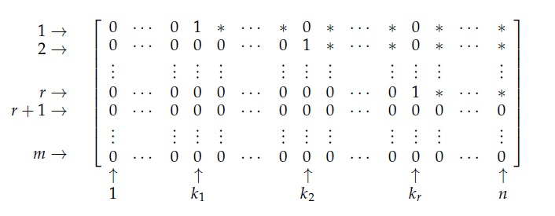

4 מערכות משוואות לינאריות
בפרק הקודם עסקנו במשוואות לינאריות עם שני משתנים x,y לתיאור המישור, וגם בשלושה משתנים x,y,z לתיאור המרחב. אנחנו רוצים להכליל את הדיון למספר (טבעי) כלשהו של משתנים. מהי המוטיבציה? משוואות לינאריות מופיעות בפיזיקה כבר בחוקי ניוטון. למשל, החוק השני מתאר תלות לינארית מהצורה \vec{F}=m\vec{a} בין וקטור הכוח \vec{F} הפועל על גוף לבין לוקטור התאוצה \vec{a} של הגוף, כאשר מסת הגוף m היא סקלר חיובי. למעשה, המשוואה הוקטורית \vec{F}=m\vec{a} מבטאת שלוש משוואות - אחת לכל קוארדינטה של המרחב.
כאשר יש הרבה גופים בבעיה עם תלות ביניהם (אילוצים), יכולות להתקבל מספר משוואות לינאריות במספר משתנים ויחד הן נקראות מערכת משוואות לינאריות. זה המקרה גם בתחומים רבים אחרים, כמו למשל רשתות נוירונים בהן כל נוירון מקבל קלטים ומפיק מהם פלט לפי חישוב שמתאים למשוואה לינארית. לא תמיד יש הקשר גיאומטרי/פיזיקלי לבעיה שאותה מבקשים להבין באמצעות מערכת משוואות לינאריות.
תחילה נבהיר איך נראית משוואה לינארית במספר משתנים ואיך מחשבים את קבוצת הפתרונות שלה.
4.1 משוואה לינארית במספר משתנים
איך נראית משוואה לינארית כללית? נשתמש במשתנים x_1,x_{2,}...,x_n במקום אותיות רגילות, כי לצורך העניין n יכול להיות גדול בהרבה ממספר האותיות באלף בית הלועזי (26) או בכל שפה אחרת. גם נראה בהמשך שצריך לבחור איזשהו סדר בין המשתנים, אז אם מספרם גדול זה נוח להשתמש באינדקס מספרי כדי להדגיש את הסדר ביניהם. זה נוח גם למספר משתנים לא גדול במיוחד.
משוואה לינארית במשתנים x_1,x_{2,}...,x_n היא משוואה מהצורה a_1x_1 + a_2x_2 + a_3x_3 + \cdots + a_n x_n = b
כאשר a_1,...,a_n הם סקלרים נתונים שנקראים מקדמים, ו-b הוא סקלר נתון שנקרא קבוע או איבר חופשי. אם כל הסקלרים והמשתנים ממשיים, נאמר שזו משוואה לינארית מעל \mathbb R. אם לפחות סקלר אחד הוא מרוכב ו/או המשתנים מרוכבים, נאמר שזו משוואה לינארית מעל \mathbb C. אם נרצה להכליל בלי לציין שמדובר ב-\mathbb R או \mathbb C, נכתוב \mathbb F ונזכור שקבוצה זו היא או \mathbb R או \mathbb C.
א. x_1-x_2+x_3-x_4=100 זו משוואה לינארית בארבעה משתנים מעל \mathbb R. דוגמה לפתרון היא (x_1,x_2,x_3,x_4)=(50,0,50,0) כי .50-0+50-0=100
ב. x_1+ix_2-x_3-ix_4+x_5=1+i זו משוואה לינארית בחמישה משתנים מעל \mathbb C. דוגמה לפתרון היא (x_1,x_2,x_3,x_4,x_5)=(1,1,0,0,0) כי .1+i\cdot1-0-0+0=1+i
ג. 0=0 זו משוואה לינארית במספר כלשהו של משתנים, מעל \mathbb R או \mathbb C. בכתיבה מלאה עבור n משתנים מדובר על המשוואה .0\cdot x_1+0\cdot x_2+0+...+0\cdot x_n=0 כל בחירה של סקלרים (x_1,x_2,...,x_n)=(c_1,c_2,...,c_n) היא פתרון למשוואה זו, שהיא פסוק אמת שלא תלוי בערכי המשתנים.
סדרת סקלרים (c_1,c_2,...,c_n) נקראת n-יה, או וקטור באורך n. נגדיר את מרחב ה-n-יות מעל \mathbb R: \mathbb R^{n}=\Set{(c_1,c_2,....,c_n)|c_1,c_2,....,c_n\in\mathbb R} וגם את מרחב ה-n-יות מעל \mathbb C: \mathbb C^{n}=\Set{(c_1,c_2,....,c_n)|c_1,c_2,....,c_n\in\mathbb C}
לעיתים נכתוב \mathbb F^n במקום לפרט אם הכוונה היא ל-\mathbb R^n או ל-\mathbb C^n.
יש לנו אינטואיציה גיאומטרית טובה לגבי המישור הדו-מימדי \mathbb R^2 והמרחב התלת-מימדי \mathbb R^3. החל מ- \mathbb R^4 ו- \mathbb C^2 כבר אין לנו יכולת לדמיין את המרחבים האלה באופן מלא, אבל נתרגל גם אליהם מבחינה אלגברית.
פתרון של משוואה לינארית הינו n-יה (c_1,c_2,...,c_n)\in\mathbb F^{n} כך שבהצבת x_1=c_1,x_2=c_2,...,x_n=c_n
המשוואה מתקיימת.
משוואה לינארית ב-5 משתנים מעל \mathbb R
x_1+x_2+x_3+x_4+x_5=100
אחד הפתרונות של המשוואה הוא (x_1,x_2,x_3,x_4,x_5)=(20,20,20,20,20) פתרון נוסף הוא (x_1,x_2,x_3,x_4,x_5)=(60,10,10,10,10) ויש עוד אינסוף אחרים. לעומת זאת, (x_1,x_2,x_3,x_4,x_5)=(0,0,0,0,0) אינו פתרון כי ההצבה נותנת 0=100 וזה כמובן לא מתקיים.
כדי למצוא את קבוצת כל הפתרונות נבודד את אחד המשתנים. נוח לבחור את x_1 כי הוא הראשון. נקבל x_1=100-x_2-x_3-x_4-x_5
זה למעשה מראה שניתן לבחור את ערכיהם של x_2,x_3,x_4,x_5 באופן שרירותי. זו משוואה מעל \mathbb R ולכן נבחר c_2,c_3,c_4,c_5\in\mathbb R שרירותיים ונציב במשוואה (x_2,x_3,x_4,x_5)=(c_2,c_3,c_4,c_5) כך נקבל x_1=100-c_2-c_3-c_4-c_5
לכן, קבוצת הפתרונות נתונה באופן פרמטרי (עם 4 פרמטרים c_2,c_3,c_4,c_5) ע"י \Set{(100-c_2-c_3-c_4-c_5,c_2,c_3,c_4,c_5)|c_2,c_3,c_4,c_5\in\mathbb R}
משוואה לינארית ב-4 משתנים מעל \mathbb Cx_1+ix_2+2ix_3+x_4=1+4i$
אחד הפתרונות של המשוואה הוא (x_1,x_2,x_3,x_4)=(1,1,1,i). נבדוק זאת: 1\cdot 1+i\cdot 1+2i\cdot 1+1\cdot i=1+4i לעומת זאת, (x_1,x_2,x_3,x_4)=(1,0,1,0) אינו פתרון. הפעם בדיקה מראה כי .1\cdot 1+i\cdot 0+2i\cdot 1+1\cdot 0=1+2i\neq1+4i
נבודד את x_1 כדי למצוא את קבוצת הפתרונות: x_1=1+4i-ix_2-2ix_3-x_4
זו משוואה מעל \mathbb C ולכן נבחר c_2,c_3,c_4\in\mathbb C שרירותיים ונציב אותם במשוואה. כך נקבל .x_1=1+4i-ic_2-2ic_3-c_4
לכן, קבוצת הפתרונות נתונה באופן פרמטרי (עם 3 פרמטרים c_2,c_3,c_4) ע"י .\Set{(1+4i-ic_2-2ic_3-c_4,c_2,c_3,c_4)|c_2,c_3,c_4\in\mathbb C}
איך פותרים משוואה לינארית כללית מהצורה ? אפשר למצוא את כל הפתרונות ע"י בידוד אחד המשתנים. מקובל לעשות זאת עבור x_1 בהנחה ש- a_1\neq0 (אם a_1=0, נבחר את המשתנה הראשון עם מקדם השונה מ-0). ראשית מעבירים לאגף ימין את כל הביטויים של המשתנים האחרים: .a_1x_1=b-a_2x_2-a_3x_3-...-a_nx_n נחלק בסקלר a_1 ונקבל .x_1=\frac{1}{a_1}(b-a_2x_2-a_3x_3-...-a_nx_n)
זה מראה שלכל בחירה של סקלרים c_2,....,c_n\in\mathbb F נקבל פתרון .(x_1,x_2,x_3,...,x_n)=(\frac{1}{a_1}(b-a_2c_2-a_3c_3-...-a_nc_n),c_2,c_3,...,c_n)
לכן, קבוצת הפתרונות של המשוואה נתונה בהצגה פרמטרית ע"י .\Set{(\frac{1}{a_1}(b-a_2c_2-a_3c_3-...-a_nc_n),c_2,c_3,...,c_n)|c_1,c_2,...,c_n\in\mathbb F}
נדגיש כי a_1,a_2,a_3,...,a_n נתונים במשוואה כסקלרים קבועים. c_1,c_2,...,c_n הם פרמטרים שרצים על פני הקבוצה \mathbb F (\mathbb R או \mathbb C) כדי ליצור את כל הפתרונות. זו הכללה (כלומר צורה יותר כללית של מקרה מוכר) של הצגה פרמטרית של ישר (פרמטר אחד) ושל מישור (שני פרמטרים) למספר כללי של פרמטרים, שהוא בעצם n-1. בפרט, לכל n\geq2 יש אינסוף פתרונות למשוואה כי ניתן להציב אינסוף אפשרויות במשתנה אחד או יותר.
שימו לב שהתייחסנו אל x_1 כמשתנה תלוי ואל x_2,x_3,...,x_n כמשתנים חופשיים (הצבנו בהם ערכים שרירותיים). אם היינו מבודדים את x_2 או משתנה אחר במקום x_1, אז הוא היה המשתנה התלוי וההצגה הפרמטרית הייתה משתנה בהתאם. עדיין, זו רק הצגה חלופית לקבוצת הפתרונות של אותה המשוואה. טבעי לבחור את x_1, אך אין חובה לעשות זאת.
את המשוואה x_1+2x_2+3x_3+4x_4=4 אפשר לפתור ע"י בידוד אחד מארבעת המשתנים (זה נתון לבחירתנו). מקובל לבודד את x_1 ולקבל x_1=4-2x_2-3x_3-4x_4 בהצבת (x_2,x_3,x_4)=(c_2,c_3,c_4) מקבלים את קבוצת הפתרונות \Set{(4-2c_2-3c_3-4c_4,c_2,c_3,c_4)|c_2,c_3,c_4\in\mathbb R} אבל באותה המידה אפשר לבודד משתנה אחר, למשל x_2 כך נקבל 2x_2=4-x_1-3x_3-4x_4 ולאחר חלוקה ב- 2: x_2=\frac{1}{2}(4-x_1-3x_3-4x_4)
בהצבת סקלרים (x_1,x_3,x_4)=(d_1,d_3,d_4) נקבל הצגה פרמטרית חדשה לקבוצת הפתרונות, שנתונה ע"י \Set{(d_1,\frac{1}{2}(4-d_1-3d_3-4d_4),d_3,d_4)|d_1,d_3,d_4\in\mathbb R} בפרט, נובע כי מתקיים שוויון בין שתי הקבוצות. מדובר בשתי הצגות שקולות.
מצאו את קבוצת הפתרונות של המשוואה 2x_1+x_2+3x_3+4x_4=5. בדקו איך ההצגה הפרמטרית משתנה כאשר מבודדים את x_2 במקום x_1.
. נבודד תחילה את x_1 ונקבל .x_1=\frac{1}{2}(5-x_2-3x_3-4x_4)
נציב (x_2,x_3,x_4)=(c_2,c_3,c_4) ונקבל את ההצגה הפרמטרית הבאה לקבוצת הפתרונות: \Set{(\frac{1}{2}(5-c_2-3c_3-4c_4),c_2,c_3,c_4)|c_2,c_3,c_4\in\mathbb R}
כעת נבודד את x_2 וזה יוביל להצגה פרמטרית נוספת של אותה קבוצת הפתרונות. ראשית נקבל .x_2=5-2x_1-3x_3-4x_4
נציב (x_1,x_3,x_4)=(d_1,d_3,d_4) ונקבל את ההצגה הפרמטרית הבאה: \Set{(d_1,5-2d_1-3d_3-4d_4,d_3,d_4)|d_1,d_3,d_4\in\mathbb R}
4.2 מערכות משוואות לינאריות
בפרק הקודם ראינו הרבה דוגמאות למערכות משוואות לינאריות (ממ"ל) מעל \mathbb R עם שתי משוואות בשני משתנים (לתיאור חיתוך שני ישרים במישור) וגם לממ"ל עם שתי משוואות בשלושה משתנים (לתיאור חיתוך שני מישורים במרחב). באופן כללי, אפשר להתייחס לכל אוסף של משוואות לינאריות כמערכת אחת.
בהקשר של החוק השני של ניוטון שהזכרו בתחילת הפרק כמשוואה וקטרית מהצורה \vec{F}=m\vec{a}, אפשר לחשוב על ממ"ל במספר כלשהו של משתנים שקשורים לוקטורי התאוצה של מספר גופים ולכוחות הפועלים עליהם. גודל הממ"ל מקשה על האינטואיציה הגיאומטרית ומוסיף חישובים (ייתכן באופן משמעותי), אך עדיין יש גישה אלגברית אחת לפתרון של כל ממ"ל. נפתח אותה בפרק זה.
א. ממ״ל של שתי משוואות בארבעה משתנים מעל \mathbb{R}:
\begin{cases}
\begin{alignedat}{7}
x_1 &{}+{}& 2x_2 &{}+{}& 3x_3 &{}+{}& 4x_4 &= 5 \\[4pt]
x_1 &{}+{}& x_2 &{}+{}& x_3 &{}+{}& x_4 &= 4
\end{alignedat}
\end{cases}
ב. ממ״ל של שלוש משוואות בשלושה משתנים מעל \mathbb{R}:
\begin{cases}
\begin{alignedat}{7}
x &{}+{}& y &{}+{}& z &= 3 \\[4pt]
x &{}+{}& 2y &{}+{}& z &= 4 \\[4pt]
x &{}+{}& y &{}+{}& 3z &= 5
\end{alignedat}
\end{cases}
כאן חזרנו להשתמש באותיות המוכרות x,y,z במקום x_1,x_2,x_3.
הסימונים לא באמת חשובים כל עוד יש עקביות - נוח להשתמש באותיות רגילות עבור מספר קטן של משתנים.
ג. ממ״ל של שתי משוואות בארבעה משתנים מעל \mathbb{C}:
\begin{cases}
\begin{alignedat}{8}
& i z_1 &{}+{}& z_2 &{}+{}& i z_3 &{}+{}& z_4 &= 2i \\[4pt]
& z_1 &{}+{}& (1+i)z_2 &{}+{}& z_3 &{}+{}& 2i z_4 &= 2
\end{alignedat}
\end{cases}
מערכת משוואות לינאריות (ממ"ל) במשתנים x_1,x_{2,}...,x_n היא אוסף של מספר כלשהו (m) של משוואות לינאריות מהצורה
\begin{cases} \begin{alignedat}{7} a_{11}x_1 &{}+{}& a_{12}x_2 &{}+{}& a_{13}x_3 &{}+{}& \dots + a_{1n}x_n &= b_1 \\[4pt] a_{21}x_1 &{}+{}& a_{22}x_2 &{}+{}& a_{23}x_3 &{}+{}& \dots + a_{2n}x_n &= b_2 \\[4pt] a_{31}x_1 &{}+{}& a_{32}x_2 &{}+{}& a_{33}x_3 &{}+{}& \dots + a_{3n}x_n &= b_3 \\[4pt] \vdots& & & & \vdots & & & \;\;\vdots \\[4pt] a_{m1}x_1 &{}+{}& a_{m2}x_2 &{}+{}& a_{m3}x_3 &{}+{}& \dots + a_{mn}x_n &= b_m \end{alignedat} \end{cases}
אם כל המקדמים והקבועים הם מספרים ממשיים, נאמר שהממ"ל מעל \mathbb R. אחרת, נאמר שהממ"ל מעל \mathbb C.
שימו לב לאינדקס הכפול: a_{ij} הוא המקדם של המשתנה x_{j} במשוואה ה- i (כלומר בשורה ה-i). b_{i} הוא הקבוע (איבר חופשי) במשוואה ה- i. צריך להתרגל לכתיבה עם שני אינדקסים, אבל זו הדרך הטבעית להתייחס גם למספר המשתנה וגם למספר המשוואה. נדגיש ש- ij אינו מכפלה וגם לא מספר דו-ספרתי בהקשר זה. בנוסף, כאן i אינו המספר המדומה אלא אינדקס שמתאר את מספר השורה, ואילו j הוא אינדקס שמתאר את מספר העמודה. אלה הסימונים המקובלים בקורס, והכוונה אמורה להיות ברורה כי אינדקס מופיע בכתב תחתי.
פתרון של ממ"ל הינו סדרת סקלרים (c_1,c_2,...,c_n) כך שבהצבת x_1=c_1,x_2=c_2,...,x_n=c_n כל המשוואות בממ"ל מתקיימות.
נחזור לדוגמה קודמת:
\begin{cases} \begin{alignedat}{7} x &{}+{}& y &{}+{}& z &= 3 \\[4pt] x &{}+{}& 2y &{}+{}& z &= 4 \\[4pt] x &{}+{}& y &{}+{}& 3z &= 5 \end{alignedat} \end{cases}
כאן המקדמים הם
a_{11}=a_{12}=a_{13}=a_{21}=a_{23}=a_{31}=a_{32}=1,\; a_{22}=2,\; a_{33}=3,
והקבועים הם b_1=3,\; b_2=4,\; b_3=5.
\begin{cases} \begin{aligned} x_1 + x_2 + x_3 + x_4 &= 4 \\[4pt] \phantom{x_1 + {}}x_2 + x_3 + x_4 &= 0 \\[4pt] x_1 + \phantom{x_2 + {}}x_3 + x_4 &= 0 \end{aligned} \end{cases}
כאן הממ״ל לא כתובה באופן מלא, כי בכל משוואה שבה חסר משתנה המשמעות היא שהמקדם המתאים הוא 0 (הרווחים נועדו להדגשה).
בכתיבה מלאה, הממ״ל נראית כך:
\begin{cases} \begin{aligned} 1\cdot x_1 + 1\cdot x_2 + 1\cdot x_3 + 1\cdot x_4 &= 4 \\[4pt] 0\cdot x_1 + 1\cdot x_2 + 1\cdot x_3 + 1\cdot x_4 &= 0 \\[4pt] 1\cdot x_1 + 0\cdot x_2 + 1\cdot x_3 + 1\cdot x_4 &= 0 \end{aligned} \end{cases}
כלומר מתקיים
\begin{cases} \begin{aligned} a_{11} &= a_{12} = a_{13} = a_{14} = 1 \\[4pt] a_{21} &= 0,\; a_{22} = a_{23} = a_{24} = 1 \\[4pt] a_{32} &= 0,\; a_{31} = a_{33} = a_{34} = 1 \end{aligned} \end{cases}
הקבועים הם b_1=4,\; b_2=b_3=0.
הרבה יותר קשה לדמיין את הגיאומטריה כאשר יש מספר משתנים גבוה מ-3, או אפילו משוואה אחת בשני משתנים מרוכבים. אבל מבחינה אלגברית, כל המקרים האלה שייכים לקטגוריה אחת ושיטת הפתרון משותפת לכולם. באופן כללי, נשאל את השאלות הבאות על ממ"ל:
כמה פתרונות יש?
כיצד נמצא את כל הפתרונות?
מהו מבנה קבוצת הפתרונות?
לפני כן, נראה עוד דוגמאות לממ"ל וגם נחזור אל חלק מהדוגמאות הקודמות. קל לבדוק אם פתרון נתון הוא אכן פתרון ע"י בדיקה שהצבתו מקיימת את כל המשוואות. עבור ממ"ל פשוטה גם לא דרוש הרבה מאמץ כדי למצוא את קבוצת הפתרונות.
א.
\begin{cases}
\begin{aligned}
x\phantom{+y+z} &= 1 \\[4pt]
\phantom{x+}y\phantom{+z} &= 2 \\[4pt]
\phantom{x+y+}z &= 3
\end{aligned}
\end{cases}
זו ממ״ל פשוטה שיש לה פתרון יחיד (x,y,z)=(1,2,3), שכבר מופיע באופן מפורש.
ב. נחזור לדוגמה קודמת:
\begin{cases}
\begin{alignedat}{7}
x &{}+{}& y &{}+{}& z &= 3 \\[4pt]
x &{}+{}& 2y &{}+{}& z &= 4 \\[4pt]
x &{}+{}& y &{}+{}& 3z &= 5
\end{alignedat}
\end{cases}
ניתן לבדוק ע״י הצבה כי (x,y,z)=(1,1,1) הוא פתרון של הממ״ל, כי כל שלוש המשוואות מתקיימות. לעומת זאת (x,y,z)=(2,1,0) אינו פתרון כי הוא מקיים רק את שתי המשוואות הראשונות.
האם (x,y,z)=(1,1,1) הוא פתרון יחיד? נראה בהמשך שהתשובה היא כן, אבל בינתיים נשים לב שהממ״ל מתארת חיתוך של שלושה מישורים במרחב. לפי הפרק הקודם, החיתוך בין כל שניים מהמישורים הוא ישר, ולכן החיתוך בין שלושתם הוא חיתוך בין שני ישרים. נראה בהמשך דרך יעילה לחישוב קבוצת הפתרונות בדוגמה זו.

ג.
\begin{cases}
\begin{aligned}
x\phantom{+y+z}+w &= 1\\
\phantom{x+}y\phantom{+z}+w &= 2\\
\phantom{x+y+}z+w &= 3
\end{aligned}
\end{cases}
זו ממ״ל בארבעה משתנים x,y,z,w. נציב w=t כמשתנה חופשי, ונקבל:
\begin{cases}
x=1-t\\
y=2-t\\
z=3-t
\end{cases}
מכאן קבוצת הפתרונות היא
\Set{(1-t,2-t,3-t,t)|t\in\mathbb R}
=\Set{(1,2,3,0)+t(-1,-1,-1,1)|t\in\mathbb R}.
אפשר לדמות את קבוצת הפתרונות כישר במרחב \mathbb{R}^4 - חד־מימדי כי יש פרמטר יחיד.
ד.
\begin{cases}
\begin{aligned}
x\phantom{+y}+z+w &= 1\\
\phantom{x+}y+z+w &= 2
\end{aligned}
\end{cases}
כאן המשתנים החופשיים הם z,w, ולכן נציב z=t,\; w=s:
\begin{cases}
x=1-t-s\\
y=2-t-s
\end{cases}
כלומר קבוצת הפתרונות היא
\Set{(1-s-t,2-s-t,s,t)|s,t\in\mathbb R}
=\Set{(1,2,0,0)+s(-1,-1,1,0)+t(-1,-1,0,1)|s,t\in\mathbb R}.
זו הצגה פרמטרית של מישור במרחב \mathbb{R}^4.
ה.
\begin{cases}
\begin{alignedat}{8}
& i z_1 &{}+{}& z_2 &{}+{}& i z_3 &{}+{}& z_4 &= 2i \\[4pt]
& z_1 &{}+{}& (1+i)z_2 &{}+{}& z_3 &{}+{}& 2i z_4 &= 2
\end{alignedat}
\end{cases}
ניתן לבדוק ע״י הצבה כי (z_1,z_2,z_3,z_4)=(1,0,1,0) הוא פתרון של הממ״ל. אינטואיטיבית, אמורים להיות אינסוף פתרונות כי מספר המשתנים גדול ממספר המשוואות. נצדיק זאת בהמשך.
ו.
\begin{cases}
\begin{aligned}
x+3y &= 0\\
x-y &= 0\\
x+y &= 1
\end{aligned}
\end{cases}
כאן אין פתרון: חיבור שתי המשוואות הראשונות נותן x+y=0, שסותר את השלישית x+y=1. גיאומטרית - שלושת הישרים נחתכים בזוגות, אך לא בנקודה משותפת.

נסתכל על הממ"ל .\begin{cases} \begin{aligned} x_1 + x_2 + 2x_3 - x_4+x_5 &= 2 \\[4pt] 5x_1 - 3x_2 - 2x_3 + x_4\phantom{+x_5} &= 0 \end{aligned} \end{cases}
האם (x_1,x_2,x_3,x_4,x_5)=(1,1,1,2,0) הוא פתרון? אם לא, לאיזה ערך של a\in\mathbb R הוקטור (x_1,x_2,x_3,x_4,x_5)=(1-a,1,1,2,a) הוא פתרון של הממ"ל?
. נציב בממ"ל (x_1,x_2,x_3,x_4,x_5)=(1,1,1,2,0) ונקבל .\begin{cases} 1+1+2-2+0=2 \\ 5-3-2+2=2\neq 0 \end{cases}
אז זה לא פתרון לממ"ל (אלא רק למשוואה הראשונה). נחפש פתרון מהצורה (x_1,x_2,x_3,x_4,x_5)=(1-a,1,1,2,a) ונקבל לאחר הצבה .\begin{cases} \begin{aligned} 1-a+1+2-2+a&=2 \\ 5(1-a)-3-2+2&=0 \end{aligned} \end{cases}
המשוואה הראשונה מתקיימת לכל ערך של a, ואילו המשוואה השנייה מתקיימת אם ורק אם .2-5a=0 \iff a=\frac{2}{5} אז הפתרון מהצורה המבוקשת (יש עוד אינסוף פתרונות מסוג אחר) הוא .(x_1,x_2,x_3,x_4,x_5)=(\frac{3}{5},1,1,2,\frac{2}{5})
4.3 מטריצות
ראינו בפרק הקודם, למשל עבור ממ"ל של שתי משוואות בשני נעלמים, שניתן לחבר בין שתי משוואות כדי לנסות לקבל משוואה יותר פשוטה שנובעת מהממ"ל. למעשה, פעולה זו משפיעה רק על המקדמים והקבועים של הממ"ל. כאשר מחברים את שתי המשוואות הראשונות של מקבלים (a_{11}+a_{21})x_1+(a_{12}+a_{22})x_2+(a_{13}+a_{23})x_3+...+(a_{1n}+a_{2n})x_n=b_1+b_2
לצורך העניין, אפשר לשים את המשתנים בצד ולחזור אליהם בסוף. המידע של הממ"ל אמנם קשור למשתנים, אבל הוא מגולם בסקלרים (מקדמים וקבועים). אז זה שימושי לייצג את הממ"ל כטבלה שבה מופיעים רק הסקלרים. טבלה כזו נקראת מטריצה.
מטריצה מסדר m\times n מעל \mathbb F היא טבלה בת m שורות ו-n עמודות כך שבכל משבצת מופיע סקלר ב-\mathbb F. בהקשר של הממ"ל ,\begin{cases} \begin{alignedat}{7} a_{11}x_1 &{}+{}& a_{12}x_2 &{}+{}& a_{13}x_3 &{}+{}& \dots + a_{1n}x_n &= b_1 \\[4pt] a_{21}x_1 &{}+{}& a_{22}x_2 &{}+{}& a_{23}x_3 &{}+{}& \dots + a_{2n}x_n &= b_2 \\[4pt] a_{31}x_1 &{}+{}& a_{32}x_2 &{}+{}& a_{33}x_3 &{}+{}& \dots + a_{3n}x_n &= b_3 \\[4pt] \vdots& & & & \vdots & & & \;\;\vdots \\[4pt] a_{m1}x_1 &{}+{}& a_{m2}x_2 &{}+{}& a_{m3}x_3 &{}+{}& \dots + a_{mn}x_n &= b_m \end{alignedat} \end{cases} נגדיר את מטריצת המקדמים (שנקראת גם מטריצת מקדמים מצומצמת):
A=\begin{pmatrix}a_{11} & a_{12} & \cdots & a_{1n}\\ a_{21} & a_{22} & \cdots & a_{2n}\\ \vdots & \vdots & \ddots & \vdots\\ a_{m1} & a_{m2} & \cdots & a_{mn} \end{pmatrix}
נגדיר גם את מטריצת המקדמים המורחבת מסדר m\times(n+1) שכוללת עמודה בצד ימין (אחרי קו מפריד) בשביל הקבועים:
\left( \begin{array}{cccc|c} a_{11} & a_{12} & \cdots & a_{1n} & b_1 \\ a_{21} & a_{22} & \cdots & a_{2n} & b_2 \\ \vdots & \vdots & \ddots & \vdots & \vdots \\ a_{m1} & a_{m2} & \cdots & a_{mn} & b_m \end{array} \right)
נגדיר בנוסף את וקטור המשתנים x=\begin{pmatrix}x_1\\ x_2\\ \vdots\\ x_n \end{pmatrix} וגם את וקטור הקבועים b=\begin{pmatrix}b_1\\ b_2\\ \vdots\\ b_m \end{pmatrix}. דרך מקוצרת לכתיבת הממ"ל היא המשוואה הוקטורית Ax=b.
בפרק הבא נבין יותר לעומק את הסימון Ax. בינתיים זה סימון מקוצר, וגם x הוא סימון נוח עבור וקטור (אין צורך בחץ מעליו).
עבור הממ״ל
\begin{cases}
\begin{aligned}
x+y+z &= 3\\
x+2y+z &= 4\\
x+y+3z &= 5
\end{aligned}
\end{cases}
מטריצת המקדמים המצומצמת היא
\begin{pmatrix}
1 & 1 & 1\\
1 & 2 & 1\\
1 & 1 & 3
\end{pmatrix}
ובשביל מטריצת המקדמים המורחבת נוסיף את עמודת הקבועים ונקבל
\left(
\begin{array}{ccc|c}
1 & 1 & 1 & 3\\
1 & 2 & 1 & 4\\
1 & 1 & 3 & 5
\end{array}
\right)
נסתכל על הממ״ל
\begin{cases}
\begin{alignedat}{7}
2x &{}+{}& y &{}+{}& z & & &= 1 \\[4pt]
x &{}+{}& 2y &{}+{}& z &{}+{}& w &= -1 \\[4pt]
x &{}+{}& y & & &{}+{}& w &= 2
\end{alignedat}
\end{cases}
נשים לב שמסתתרים שני אפסים: המקדם של w במשוואה הראשונה, והמקדם של z במשוואה השלישית.
הנה כתיבה יותר מפורשת:
\begin{cases}
\begin{alignedat}{7}
2x &{}+{}& y &{}+{}& z &{}+{}& 0\!\cdot\! w &= 1 \\[4pt]
x &{}+{}& 2y &{}+{}& z &{}+{}& w &= -1 \\[4pt]
x &{}+{}& y &{}+{}& 0\!\cdot\! z &{}+{}& w &= 2
\end{alignedat}
\end{cases}
לכן מטריצת המקדמים המצומצמת היא
\begin{pmatrix}
2 & 1 & 1 & 0\\
1 & 2 & 1 & 1\\
1 & 1 & 0 & 1
\end{pmatrix}
ומטריצת המקדמים המורחבת היא
\left(
\begin{array}{cccc|c}
2 & 1 & 1 & 0 & 1\\
1 & 2 & 1 & 1 & -1\\
1 & 1 & 0 & 1 & 2
\end{array}
\right)
Remark. שימו לב שאם המשתנה ה- j לא מופיע במשוואה ה- i, זה אומר שהמקדם המתאים הוא 0 ולכן a_{ij}=0 במטריצה.
כתבו את מטריצות המקדמים (מצומצמת ומורחבת) ועמודת הקבועים של הממ"ל .\begin{cases} \begin{alignedat}{7} x &{}+{}& y &{}+{}& z &{}+{}& w &= 0 \\[4pt] & & & & z &{}-{}& w &= 2 \\[4pt] x &{}+{}& 2y &{}+{}& 2z &{}+{}& 3w &= 8 \end{alignedat} \end{cases}
. מטריצת המקדמים המצומצמת היא .\begin{pmatrix}1 & 1 & 1 & 1\\ 0 & 0 & 1 & -1\\ 1 & 2 & 2 & 3 \end{pmatrix}
מטריצת המקדמים המורחבת היא .\left( \begin{array}{cccc|c} 1 & 1 & 1 & 1 & 0\\ 0 & 0 & 1 & -1 & 2\\ 1 & 2 & 2 & 3 & 8 \end{array} \right)
וקטור הקבועים הוא וקטור העמודה הימנית של המטריצה האחרונה, כלומר \begin{pmatrix} 0 \\ 2 \\ 8 \end{pmatrix}.
4.4 מטריצות מדורגות ומדורגות קנונית
כבר נתקלנו בדוגמאות בהן הממ"ל יחסית פשוטה לפתרון, במובן שקל לזהות את המשתנים החופשיים, להציב בהם ערכים שרירותיים ולקבל את הערכים המתאימים של המשתנים התלויים ע"י קצת אלגברה (פעולות חשבון ואולי הצבות). איך מטריצת המקדמים (מצומצמת או מורחבת) נראית במקרים כאלה? לשם כך נועדה ההגדרה הבאה.
מטריצה נקראת מדורגת אם:
1. אם במטריצה יש שורות אפסים, אז הן מופיעות מתחת לכל שאר השורות.
2. בכל שורה שאינה שורת אפסים, האיבר הראשון (משמאל) שאינו 0 נקרא האיבר המוביל של שורה זו, והוא מופיע משמאל לאיבר המוביל של השורה מתחתיו (אם קיימת כזו). בפרט, מתחת לכל איבר מוביל יש אפסים בלבד.
א.
\begin{pmatrix}
1 & 0 & 1\\
0 & 1 & 0\\
0 & 0 & 4
\end{pmatrix}
האיברים המובילים הם 1,1,4 לפי סדר השורות, והם מופיעים בסדר הנכון (זזים ימינה כאשר יורדים שורה). בנוסף, אין בכלל שורות אפסים ולכן זו מטריצה מדורגת.
ב.
\begin{pmatrix}
1 & 0 & 1\\
0 & 1 & 0\\
0 & 5 & 4
\end{pmatrix}
אינה מדורגת כי האיבר המוביל של השורה השלישית (5) מופיע באותה העמודה של האיבר המוביל של השורה השנייה (1).
ג.
\begin{pmatrix}
1 & 2 & 3\\
0 & 0 & 4\\
0 & 0 & 0
\end{pmatrix}
מדורגת. שורת האפסים מופיעה בסוף, והאיבר המוביל של השורה הראשונה (1) מופיע משמאל לזה של השורה השנייה (4).
ד.
\begin{pmatrix}
1 & 0 & 0\\
0 & 0 & 0\\
0 & 0 & 1
\end{pmatrix}
אינה מדורגת כי יש שורת אפסים מעל לשורה שאינה כולה אפסים.
מטריצות מדורגות הן יחסית נוחות, אך יש מטריצות מדורגות מסוג יותר מסוים שהוא עוד יותר נוח בפתרון ממ"ל.
מטריצה נקראת מדורגת קנונית אם:
1. היא מדורגת, כלומר מקיימת את שני תנאי ההגדרה הקודמת.
2. האיבר המוביל בכל שורה (אם הוא קיים) הוא 1. אפשר גם לקרוא לו אחד מוביל.
3. בכל עמודה של אחד מוביל, כל שאר האיברים הם 0 (מתחת וגם מעל לאחד המוביל).
א.
\begin{pmatrix}
1 & 0 & 0\\
0 & 1 & 0\\
0 & 0 & 1
\end{pmatrix}
זו מטריצת היחידה מסדר 3\times3. היא מדורגת קנונית כי אין בה שורת אפסים, כל האיברים המובילים הם 1 ומופיעים בסדר הנכון, וכל שאר האיברים הם 0.
ב.
\begin{pmatrix}
1 & 0 & 1\\
0 & 1 & 0\\
0 & 0 & 4
\end{pmatrix}
מטריצה זו מדורגת אך לא קנונית, כי האיבר המוביל התחתון אינו 1. בנוסף, לא כל האיברים מעליו הם 0.
ג.
\begin{pmatrix}
1 & 0 & 0 & 2\\
0 & 0 & 1 & 3\\
0 & 0 & 0 & 0
\end{pmatrix}
מדורגת קנונית כי שני האיברים המובילים הם 1 ומופיעים בסדר הנכון.
חוץ מהם יש רק אפסים בעמודות שלהם, וגם שורת האפסים מופיעה בסוף.
מהי הצורה הכללית של מטריצה מדורגת קנונית מסדר m\times n?

האיברים המובילים מופיעים בעמודות k_1,k_2,....,k_{r}. r הוא גם מספר השורות שאינן כולן אפסים (בכל שורה כזו יש איבר מוביל אחד).
נניח שקיבלנו צורה מדורגת קנונית של מטריצת מקדמים מצומצמת A של ממ"ל Ax=b.
1. כל משתנה שמתאים לעמודה בה מופיע איבר מוביל נקרא משתנה תלוי. שאר המשתנים נקראים חופשיים.
2. למספר המשתנים התלויים נקרא הדרגה של הממ"ל/מטריצה. נסמן \mathop{\mathrm{rank}}(A).
Remark. נראה בקרוב (שיטת הדירוג של גאוס) שניתן לבצע על כל מטריצה סדרת פעולות (שנקראת דירוג) בין שורותיה, כך שבסוף מתקבלת מטריצה מדורגת קנונית. מטריצה זו היא יחידה (כלומר לא תלויה בדרך הדירוג שניתנת לבחירה) וניתן להשתמש בה כדי לקבוע את קבוצת הפתרונות של הממ"ל המקורית. הדרגה, שהיא כאמור מספר המשתנים התלויים, שווה למספר השורות בצורה המדורגת קנונית שאינן שורת אפסים. זהו גם מספר האיברים המובילים.
הרעיון של משתנה תלוי זה שיש משוואה שמתארת את התלות שלו במשתנים החופשיים (או חלקם). ניתן להציב סקלרים שרירותיים במשתנים החופשיים בכל משוואה, ולקבל את הערכים המתאימים של המשתנים התלויים.
נפתור את הממ"ל .\begin{cases} \begin{aligned} x_1+ix_4&=1+i\\ x_3+x_4&=2 \end{aligned} \end{cases}
מטריצת המקדמים המורחבת היא \left( \begin{array}{cccc|c} 1 & 0 & 0 & i & 1+i\\ 0 & 0 & 1 & 1 & 2 \end{array} \right)
היא כבר מדורגת קנונית ויש בה שני אחדות מובילים. לכן הדרגה היא 2 והמשתנים התלויים הם x_1,x_3. נציב (x_2,x_4)=(s,t)\in\mathbb C^{2} בשתי המשוואות ונבודד את המשתנים התלויים: .\begin{cases} x_1=1+i-it\\ x_3=2-t \end{cases}
לכן, קבוצת הפתרונות נתונה ע"י .\Set{(1+i-it,s,2-t,t)|s,t\in\mathbb C}
יש שני פרמטרים בהצגה הפרמטרית כי יש שני משתנים חופשיים.
4.5 פעולות שורה אלמנטריות
נרצה לפשט ממ"ל כללית, כלומר להעביר את מטריצת המקדמים לצורה מדורגת קנונית בלי לשנות את קבוצת הפתרונות של הממ"ל. זה לא רעיון חדש: כבר במקרה של שתי משוואות בשני משתנים ראינו שאפשר לחבר/לחסר בין המשוואות וגם להשתמש בכפל בסקלר. כל פעולה כזו לא משנה את קבוצת הפתרונות, כי מדובר בפעולה הפיכה (אפשר לשחזר את הממ"ל המקורית מתוך צורתה החדשה). במילים אחרות, פעולות כאלו יוצרות ממ"ל שקולה לממ"ל המקורית, ויש בזה טעם אם היא יותר פשוטה לפתרון כמו במקרה של ממ"ל המתאימה למטריצה מדורגת קנונית.
תהי A=\begin{pmatrix}a_{11} & a_{12} & \cdots & a_{1n}\\ a_{21} & a_{22} & \cdots & a_{2n}\\ \vdots & \vdots & \ddots & \vdots\\ a_{m1} & a_{m2} & \cdots & a_{mn} \end{pmatrix} מטריצה מסדר m\times n מעל \mathbb F. נסמן ב-R_1,R_2,...,R_m את שורות המטריצה A, כלומר R_{i}=(a_{i1},a_{i2},...,a_{in}) לכל 1\leq i\leq m. להלן שלושה סוגי פעולות על שורות A הנקראות פעולות שורה אלמנטריות:
1. כפל השורה R_{i} בסקלר c\in F שאינו 0. נסמן פעולה זו כך: cR_{i}\rightarrow R_{i}.
2. הוספה לשורה R_{i} את הכפולה של השורה R_{j} בסקלר c\in \mathbb F כאשר i\neq j. נסמן R_{i}+cR_{j}\rightarrow R_{i}. השורה R_{j} נשארת ללא שינוי.
3. החלפת השורות R_{i} ו-R_{j} עבור i\neq j. נסמן R_{i}\leftrightarrow R_{j}.
נדגים כל סוג פעולה על המטריצה \begin{pmatrix} 1 & 2 & 3\\ 4 & 5 & 6\\ 7 & 8 & 9 \end{pmatrix}
1. נכפיל את השורה הראשונה ב-2: \begin{pmatrix} 1 & 2 & 3\\ 4 & 5 & 6\\ 7 & 8 & 9 \end{pmatrix} \overset{2R_1 \to R_1}{\underset{R_1\leftarrow \frac{1}{2}R_1}{\longleftrightarrow}} \begin{pmatrix} 2 & 4 & 6\\ 4 & 5 & 6\\ 7 & 8 & 9 \end{pmatrix} את הפעולה משמאל לימין ציינו מעל לחץ, ומתחתיו את הפעולה ההפוכה מימין לשמאל - כפל השורה הראשונה ב-\frac{1}{2}.
2. נוסיף לשורה השלישית כפולה של השורה הראשונה בסקלר -3: \begin{pmatrix} 1 & 2 & 3\\ 4 & 5 & 6\\ 7 & 8 & 9 \end{pmatrix} \overset{R_3-3R_1 \to R_3}{\underset{R_3\leftarrow R_3+3R_1}{\longleftrightarrow}} \begin{pmatrix} 1 & 2 & 3\\ 4 & 5 & 6\\ 4 & 2 & 0 \end{pmatrix} שימו לב שהשורה הראשונה לא משתנה; חישבנו לשורה השלישית: (7,8,9)-3(1,2,3)=(4,2,0).
3. נחליף בין השורה השנייה לשורה השלישית: \begin{pmatrix} 1 & 2 & 3\\ 4 & 5 & 6\\ 7 & 8 & 9 \end{pmatrix} \overset{R_2 \leftrightarrow R_3}{\underset{R_3 \leftrightarrow R_2}{\longleftrightarrow}} \begin{pmatrix} 1 & 2 & 3\\ 7 & 8 & 9\\ 4 & 5 & 6 \end{pmatrix} כאן הפעולה ההפוכה היא אותה הפעולה: החלפת השורות R_2 ו-R_3.
Remark. באופן כללי, כל פעולות השורה האלמנטריות הן הפיכות. נבהיר למה הכוונה בכל מקרה:
א. לכל c\neq0 ולכל 1\leq i\leq m הפעולה ההפוכה ל-cR_{i}\rightarrow R_{i} היא \frac{1}{c}R_{i}\rightarrow R_{i}.
ב. לכל c\in F ולכל i\neq j הפעולה ההפוכה ל-R_{i}+cR_{j}\rightarrow R_{i} היא R_{i}-cR_{j}\rightarrow R_{i}. אכן, אם מבצעים את הפעולה הראשונה ואחריה את השנייה (או בסדר הפוך), התוצאה היא R_{i}+cR_{j}-cR_{j}\rightarrow R_{i} או בקיצור R_{i}\to R_{i}. החזרה למקור היא המשמעות של פעולה הפוכה.
ג. לכל i\neq j הפעולה ההפוכה להחלפה R_{i}\leftrightarrow R_{j} היא אותה ההחלפה R_{i}\leftrightarrow R_{j}.
מטריצות A,A' נקראות שקולות שורה אם ניתן להגיע מ- A ל- A' ע"י סדרה סופית של פעולות שורה אלמנטריות.
Remark. זו הגדרה סימטרית. אם ניתן להגיע מ- A ל- A' ע"י סדרה סופית של פעולות שורה אלמנטריות, אז גם ניתן להגיע מ- A' ל- A ע"י סדרת הפעולות ההפוכות.
. נסתכל על הממ"ל Ax=b עם מטריצת מקדמים מורחבת (A|b), וגם על הממ"ל A'x=b' עם מטריצת מקדמים מורחבת (A'|b'). אם (A|b),(A'|b') הן מטריצות שקולות שורה, אז קבוצת הפתרונות של הממ"ל Ax=b שווה לקבוצת הפתרונות של הממ"ל A'x=b'.
במילים אחרות, כל n-יה (c_1,c_2,...,c_n) היא פתרון של הממ"ל החדשה (שמתקבלת אחרי סדרת פעולות שורה אלמנטריות) אם ורק אם היא פתרון של הממ"ל המקורית.
Proof. לכל ממ"ל Ax=b ולכל פעולת שורה אלמנטרית, כל פתרון של הממ"ל לפני הפעולה נשאר פתרון של הממ"ל שמתקבלת בעקבות הפעולה. ולהיפך, ההפיכות של הפעולה מראה שכל פתרון של הממ"ל החדשה הוא גם פתרון של הממ"ל הקודמת לה. אז קבוצת הפתרונות נשארת ללא שינוי.
נמשיך כך ונבצע מספר סופי של פעולות שורה אלמנטריות כדי לקבל את הממ"ל A'x=b'. קבוצת הפתרונות תישמר בכל שלב ולכן גם בסוף התהליך היא תישאר זהה לקבוצת הפתרונות המקורית.
Remark. כפל שורה ב-0 אינה פעולה הפיכה. למעשה, הוא הופך את המשוואה המתאימה בממ"ל למשוואה 0=0 שמתקיימת ללא קשר למשתנים. בדרך כלל זה מוביל לאובדן מידע על המשתנים, מה שישפיע על קבוצת הפתרונות (יגדיל אותה) ולכן יש להימנע מכפל שורה ב-0. הנה דוגמה פשוטה במקרה של שתי משוואות בשני משתנים: \begin{cases} x=1\\ y=0 \end{cases}
לממ"ל יש פתרון יחיד (x,y)=(1,0) ושני המשתנים תלויים. נכפיל את השורה השנייה ב-0 במטריצת המקדמים המורחבת: \left( \begin{array}{cc|c} 1 & 0 & 1\\ 0 & 1 & 0 \end{array}\right) \xrightarrow{0\cdot R_2\to R_2} \left( \begin{array}{cc|c} 1 & 0 & 1\\ 0 & 0 & 0 \end{array} \right)
הממ"ל החדשה היא .\begin{cases} x=1\\ 0=0 \end{cases}
עכשיו y משתנה חופשי. נציב y=t ונקבל קבוצת פתרונות \Set{(1,t)|t\in\mathbb R}, כלומר התווספו אינסוף פתרונות. הממ"ל החדשה לא שקולה לממ"ל המקורית כי הכפלנו ב-0 ובכך מחקנו משוואה.
כאשר וקטור הקבועים של הממ"ל Ax=b הוא b=\begin{pmatrix}0\\ 0\\ \vdots\\ 0 \end{pmatrix}, הממ"ל נקראת הומוגנית וניתן לכתוב Ax=0. הכוונה באגף ימין היא לוקטור האפס באורך m (מספר השורות של A).
Remark. במקרה של ממ"ל הומוגנית, וקטור הקבועים מיותר מבחינת פעולות השורה האלמנטריות. הסיבה לכך היא שכל פעולת חיבור בין אפסים תיתן 0, וכנ"ל לכפל בסקלר (כי a\cdot 0=0 לכל סקלר a ממשי או מרוכב). לכן זה מוצדק להסתפק במטריצת המקדמים המצומצמת במקרה זה (ורק במקרה זה), וכמובן הממ"ל החדשה גם תהיה הומוגנית.
נסתכל על ממ"ל הומוגנית: \begin{cases} \begin{alignedat}{5} x &{}+{}& y &{}+{}& z &= 0 \\[4pt] 2x &{}{}& &{}+{}& 2z &= 0 \\[4pt] 3x &{}+{}& 5y &{}+{}& 7z &= 0 \end{alignedat} \end{cases}
נבצע סדרה של פעולות על מטריצת המקדמים המצומצמת:
$$ \begin{aligned} {3} &\begin{pmatrix} 1 & 1 & 1 \\ 2 & 0 & 2 \\ 3 & 5 & 7 \end{pmatrix} &&\xrightarrow{\dfrac{1}{2}R_2 \to R_2} \begin{pmatrix} 1 & 1 & 1 \\ 1 & 0 & 1 \\ 3 & 5 & 7 \end{pmatrix} &&\xrightarrow{R_1 - R_2 \to R_1} \begin{pmatrix} 0 & 1 & 0 \\ 1 & 0 & 1 \\ 3 & 5 & 7 \end{pmatrix} \\ \xrightarrow{R_1 \leftrightarrow R_2}&\begin{pmatrix} 1 & 0 & 1 \\ 0 & 1 & 0 \\ 3 & 5 & 7 \end{pmatrix} &&\xrightarrow{R_3 - 3R_1 \to R_3} \begin{pmatrix} 1 & 0 & 1 \\ 0 & 1 & 0 \\ 0 & 5 & 4 \end{pmatrix} &&\xrightarrow{R_3 - 5R_2 \to R_3} \begin{pmatrix} 1 & 0 & 1 \\ 0 & 1 & 0 \\ 0 & 0 & 4 \end{pmatrix} \\ \xrightarrow{\dfrac{1}{4}R_3 \to R_3}&\begin{pmatrix} 1 & 0 & 1 \\ 0 & 1 & 0 \\ 0 & 0 & 1 \end{pmatrix} &&\xrightarrow{R_1 - R_3 \to R_1} \begin{pmatrix} 1 & 0 & 0 \\ 0 & 1 & 0 \\ 0 & 0 & 1 \end{pmatrix} && \end{aligned}$$
נסביר בהמשך איך בחרנו את הפעולות האלו. בינתיים נציין שסדרה כזו של פעולות נקראת דירוג מטריצה, וכאן היא מראה כי הממ"ל המקורית שקולה לממ"ל ההומוגנית שמתאימה למטריצה האחרונה שקיבלנו: \begin{cases} x=0\\ y=0\\ z=0 \end{cases}
לכן גם לממ"ל המקורית יש פתרון יחיד, שהוא הפתרון הטריוויאלי שבו כל המשתנים מתאפסים. שימו לב לצורתה של המטריצה האחרונה שהתקבלה בתהליך הדירוג. זו צורה נוחה מאוד בגלל ריבוי האפסים, ובנוסף כל שאר האיברים הם 1. לכן, בכל משוואה בממ"ל האחרונה יש משתנה תלוי שהוא כבר מבודד (ובמקרה זה אין אף משתנה חופשי).
באופן כללי, צריך להתייחס לשתי שאלות כאשר מנסים לפשט ממ"ל:
איזו פעולת שורה אלמנטרית בוחרים בכל שלב?
מתי עוצרים את הדירוג? כלומר, מתי המטריצה פשוטה מספיק כדי לפתור את הממ"ל?
4.6 שיטת הדירוג של גאוס
כיצד נבחר פעולות שורה אלמנטריות לבצע כדי להעביר מטריצה נתונה A=\begin{pmatrix}a_{11} & a_{12} & \cdots & a_{1n}\\ a_{21} & a_{22} & \cdots & a_{2n}\\ \vdots & \vdots & \ddots & \vdots\\ a_{m1} & a_{m2} & \cdots & a_{mn} \end{pmatrix} לצורה מדורגת קנונית? יש שיטה מסודרת (אלגוריתם) שנקראת שיטת הדירוג של גאוס. בהינתן מטריצה, נפעל לפי השלבים הבאים:
נחפש בעמודה הראשונה איבר a_{i1}\neq0 ונהפוך אותו ל-1 ע"י הפעולה \frac{1}{a_{i1}}R_{i}\to R_{i} (אם יש רק אפסים, אפשר לדלג לשלב 3). אם i\neq1, נבצע גם את ההחלפה R_{i}\leftrightarrow R_1 כדי שיופיע 1 בפינה השמאלית העליונה.
נשתמש ב-1 שקיבלנו בשורה הראשונה כדי לאפס את כל האיברים מתחתיו. כלומר: נבצע את הפעולה R_{j}-a_{j1}R_1\to R_{j} לכל j>1 כך ש-a_{j1}\neq0. כך נקבל עמודה שכמעט כולה אפסים חוץ מהאחד המוביל בשורה הראשונה.
ממשיכים באופן דומה עם העמודה השנייה וחוזרים על אותם השלבים כדי לאפס את כל האיברים חוץ מאיבר אחד שיופיע בשורה השנייה כ-1 (אם מלכתחילה יש רק אפסים מתחת לשורה הראשונה, ממשיכים הלאה לעמודה הבאה). יש להימנע מפעולה שתשנה את העמודה הראשונה.
ממשיכים באופן דומה עם שאר העמודות לפי הסדר, בלי לשנות את העמודות הקודמות.
עוצרים אחרי שעברנו על כל העמודות, או כאשר כל השורות מתחת לאחד המוביל האחרון הן שורות אפסים (ואז אין מה לעשות איתן).
נחזור לדוגמה , אבל הפעם נעבוד קצת שונה וגם נסביר את בחירת הפעולות. ניתן לבצע מספר פעולות במקביל אם הן בלתי תלויות, כמו להחסיר כפולות של שורה כלשהי משורות אחרות (לכל שורה כפולה משלה).
\begin{aligned} \begin{pmatrix}1 & 1 & 1 \\ 2 & 0 & 2 \\ 3 & 5 & 7 \end{pmatrix} &\xrightarrow[R_2-2R_1 \to R_2]{R_3-3R_1 \to R_3} \begin{pmatrix}1 & 1 & 1 \\ 0 & -2 & 0 \\ 0 & 2 & 4\end{pmatrix} &\xrightarrow{-\dfrac{1}{2}R_2 \to R_2} \begin{pmatrix}1 & 1 & 1 \\ 0 & 1 & 0 \\ 0 & 2 & 4 \end{pmatrix} \\ &\xrightarrow[R_1-R_2 \to R_1]{R_3-2R_2 \to R_3} \begin{pmatrix}1 & 0 & 1 \\ 0 & 1 & 0 \\ 0 & 0 & 4\end{pmatrix} &\xrightarrow{\dfrac{1}{4}R_3 \to R_3} \begin{pmatrix}1 & 0 & 1 \\ 0 & 1 & 0 \\ 0 & 0 & 1\end{pmatrix} \\ &\xrightarrow{R_1-R_3 \to R_1} \begin{pmatrix}1 & 0 & 0 \\ 0 & 1 & 0 \\ 0 & 0 & 1\end{pmatrix} \end{aligned}
בשלב הראשון כבר היה 1 בשורה הראשונה. השתמשנו בו כדי לאפס את האיברים מתחתיו.
בשלב השני הפכנו את -2 ל-1. בשלב השלישי איפסנו את שאר האיברים בעמודה השנייה.
בשלב הרביעי הפכנו את 4 ל-1. בשלב החמישי איפסנו את שאר האיברים בעמודה השלישית.
התוצאה היא מטריצה מדורגת קנונית (למעשה מטריצת היחידה) עם אחדות מובילים ואפסים בלבד.
Remark. כמו בדוגמה לעיל, לרוב יש יותר מדרך אחת לפעול לפי שיטת הדירוג של גאוס. זה גם לגיטימי לעשות פעולה מיותרת או לא אופטימלית (מבחינת מספר הפעולות) כל עוד היא חוקית. כל דרך היא נכונה ובלבד שאין בה כפל שורה ב-0 (או טעות חישוב) ומתקבלת בסוף מטריצה מדורגת קנונית. מטריצה זו היא יחידה ולכן אינה תלויה בדרך הדירוג.
נפתור את הממ"ל הבאה:
\begin{cases} \begin{alignedat}{8} 2x &{}+{}& y &{}-{}& z &{}+{}& w &= 8 \\[4pt] -3x &{}-{}& y &{}+{}& 2z &{}+{}& 3w &= -11 \\[4pt] -2x &{}+{}& y &{}+{}& 2z & & &= -3 \end{alignedat} \end{cases}
נדרג את מטריצת המקדמים המורחבת:
\begin{aligned} &\left(\begin{array}{rrrr|r} 2 & 1 & -1 & 1 & 8 \\ -3 & -1 & 2 & 3 & -11 \\ -2 & 1 & 2 & 0 & -3 \end{array}\right) \xrightarrow{\substack{R_2 + \tfrac{3}{2} R_1 \to R_2 \\ R_3 + R_1 \to R_3}} \left(\begin{array}{rrrr|r} 2 & 1 & -1 & 1 & 8 \\ 0 & \tfrac{1}{2} & \tfrac{1}{2} & \tfrac{9}{2} & 1 \\ 0 & 2 & 1 & 1 & 5 \end{array}\right) \\[6pt] &\xrightarrow{2 R_2 \to R_2} \left(\begin{array}{rrrr|r} 2 & 1 & -1 & 1 & 8 \\ 0 & 1 & 1 & 9 & 2 \\ 0 & 2 & 1 & 1 & 5 \end{array}\right) \xrightarrow{R_3 - 2 R_2 \to R_3} \left(\begin{array}{rrrr|r} 2 & 1 & -1 & 1 & 8 \\ 0 & 1 & 1 & 9 & 2 \\ 0 & 0 & -1 & -17 & 1 \end{array}\right) \\[6pt] &\xrightarrow{-R_3 \to R_3} \left(\begin{array}{rrrr|r} 2 & 1 & -1 & 1 & 8 \\ 0 & 1 & 1 & 9 & 2 \\ 0 & 0 & 1 & 17 & -1 \end{array}\right) \xrightarrow{\substack{R_1 + R_3 \to R_1 \\ R_2 - R_3 \to R_2}} \left(\begin{array}{rrrr|r} 2 & 1 & 0 & 18 & 7 \\ 0 & 1 & 0 & -8 & 3 \\ 0 & 0 & 1 & 17 & -1 \end{array}\right) \\[6pt] &\xrightarrow{\tfrac{1}{2} R_1 \to R_1} \left(\begin{array}{rrrr|r} 1 & \tfrac{1}{2} & 0 & 9 & \tfrac{7}{2} \\ 0 & 1 & 0 & -8 & 3 \\ 0 & 0 & 1 & 17 & -1 \end{array}\right) \xrightarrow{R_1 - \tfrac{1}{2} R_2 \to R_1} \left(\begin{array}{rrrr|r} 1 & 0 & 0 & 13 & 2 \\ 0 & 1 & 0 & -8 & 3 \\ 0 & 0 & 1 & 17 & -1 \end{array}\right) \end{aligned}
הממ"ל השקולה שמתאימה למטריצה המדורגת קנונית, נתונה ע"י:
\begin{cases} \begin{aligned} x+13w &= 2 \\ y-8w &= 3 \\ z+17w &= -1 \end{aligned} \end{cases}
המשתנה החופשי הוא w. נציב w=t ונבודד את שאר המשתנים כדי לקבל את קבוצת הפתרונות:
\Set{(2-13t,3+8t,-1-17t,t)|t\in\mathbb R}
נפתור את הממ"ל הבאה מעל \mathbb C:
\begin{cases} \begin{aligned} x + y + z &= i \\ x+ iy + z &= 1+i \\ x + y + iz &= 2 \end{aligned} \end{cases}
נדרג את מטריצת המקדמים המורחבת:
\begin{aligned} &\left(\begin{array}{rrr|r} 1 & 1 & 1 & i \\ 1 & i & 1 & 1 + i \\ 1 & 1 & i & 2 \end{array}\right) \xrightarrow{\substack{R_2 - R_1 \to R_2 \\ R_3 - R_1 \to R_3}} \left(\begin{array}{rrr|r} 1 & 1 & 1 & i \\ 0 & i - 1 & 0 & 1 \\ 0 & 0 & i - 1 & 2 - i \end{array}\right) \\[6pt] &\xrightarrow{\tfrac{1}{\,i - 1\,} R_2 \to R_2} \left(\begin{array}{rrr|r} 1 & 1 & 1 & i \\ 0 & 1 & 0 & \tfrac{1}{\,i - 1\,} \\ 0 & 0 & i - 1 & 2 - i \end{array}\right) \xrightarrow{\tfrac{1}{\,i - 1\,} R_3 \to R_3} \left(\begin{array}{rrr|r} 1 & 1 & 1 & i \\ 0 & 1 & 0 & \tfrac{1}{\,i - 1\,} \\ 0 & 0 & 1 & \tfrac{2 - i}{\,i - 1\,} \end{array}\right) \\[6pt] &\xrightarrow{R_1 - R_2 - R_3 \to R_1} \left(\begin{array}{rrr|r} 1 & 0 & 0 & i - \tfrac{3 - i}{\,i - 1\,} \\ 0 & 1 & 0 & \tfrac{1}{\,i - 1\,} \\ 0 & 0 & 1 & \tfrac{2 - i}{\,i - 1\,} \end{array}\right) \end{aligned}
זה מראה שהפתרון הוא יחיד (כי אין משתנה חופשי) ונתון ע"י:
\begin{cases} x=i-\frac{3-i}{i-1}=i-\frac{(3-i)(-i-1)}{2}=\frac{2i+(3-i)(1+i)}{2}=\frac{4+4i}{2}=2+2i\\ y=\frac{1}{i-1}=-\frac{1+i}{2} \\ z=\frac{2-i}{i-1}=\frac{(2-i)(-i-1)}{2}=-\frac{3+i}{2} \end{cases}
כלומר (x,y,z)=(2+2i,-\frac{1+i}{2},-\frac{3+i}{2}).
4.7 מספר הפתרונות
ראינו בדוגמאות השונות שמספר הפתרונות לממ"ל Ax=b נקבע לפי שני קריטריונים:
האם יש שורת סתירה מהצורה (\begin{array}{rrrr|r} 0 & 0 & \cdots & 0 & 1 \\ \end{array}) בצורה המדורגת קנונית? אם כן, אין פתרון לממ"ל. אם לא, נעבור לקריטריון הבא.
האם יש משתנה חופשי (אחד או יותר)? אם כן, יש אינסוף פתרונות לממ"ל. אם לא, יש פתרון יחיד.
ניתן לאפיין את הקריטריונים לעיל באמצעות הדרגה \mathop{\mathrm{rank}}(A) של מטריצת המקדמים המצומצמת, והדרגה \mathop{\mathrm{rank}}(A|b) של מטריצת המקדמים המורחבת. דירוג קנוני של A מתאים לדירוג קנוני של (A|b), כאשר ההבדל היחיד הוא העמודה הימנית (צריך לבצע עליה את כל פעולות השורה שבחרנו עבור A).
ראשית נוכיח כמה תכונות של דרגה.
1. לכל A מסדר m\times n ולכל b\in\mathbb F^n מתקיים \mathop{\mathrm{rank}}(A)\leq\mathop{\mathrm{rank}}(A|b).*
2. מתקיים 0\leq\mathop{\mathrm{rank}}(A)\leq\min\{m,n\} כאשר \min\{m,n\} הוא המספר הקטן מבין m,n.*
Proof. 1. נניח כי הצורה המדורגת קנונית של (A|b) היא (A'|b'). אז בפרט, A' היא הצורה המדורגת קנונית של A.
בהכרח מתקיים \mathop{\mathrm{rank}}(A)\leq\mathop{\mathrm{rank}}(A|b) כי מספר האיברים המובילים ב- (A'|b') הוא לפחות מספר האיברים המובילים ב- A'. או שהדרגות שוות, או שהדרגה של מטריצת המקדמים המורחבת גדולה יותר (ב-1) כתוצאה משורת סתירה שמוסיפה איבר מוביל.
2. הדרגה היא מספר טבעי (היא 0 אם ורק אם כל איברי המטריצה הם 0). מאחר שזהו מספר האיברים המובילים בצורה המדורגת קנונית של A, מספר זה הוא לכל היותר m כי כל איבר מוביל מתאים לשורה אחת בלבד (ייתכן שיש גם שורות אפסים ואז הדרגה קטנה מ- m). באופן דומה, כל איבר מוביל לעמודה אחת בלבד (ושוב ייתכן שיש עמודות נוספות). אז הדרגה היא לכל היותר n, ובסך הכל מתקיים .0\leq\mathop{\mathrm{rank}}(A)\leq\min\{m,n\}
לכל מטריצה A מסדר m\times n ולכל b\in\mathbb R^n, מספר הפתרונות לממ"ל Ax=b נקבע באופן הבא:*
1. אם \mathop{\mathrm{rank}}(A)<\mathop{\mathrm{rank}}(A|b), אז אין לממ"ל פתרון.
2. אם \mathop{\mathrm{rank}}(A)=\mathop{\mathrm{rank}}(A|b)<n, אז לממ"ל יש אינסוף פתרונות.
3. אם \mathop{\mathrm{rank}}(A)=\mathop{\mathrm{rank}}(A|b)=n, אז לממ"ל יש פתרון יחיד.
Proof. בכל מקרה נתרגם את הנתון על הדרגות לשפה של שורת סתירה ומשתנים חופשיים.
1. במקרה זה יש שורת סתירה ולכן אין פתרון.
2. כאן אין שורת סתירה ויש לפחות משתנה חופשי אחד, כי מספר המשתנים התלויים קטן ממספר המשתנים הכולל. אז יש אינסוף פתרונות.
3. כאן אין שורת סתירה ואין משתנה חופשי, אז יש פתרון יחיד.
נסתכל על ממ"ל שבה חלק מהמקדמים תלויים בפרמטר a, כלומר קבוע (לא משתנה) שערכו אינו ידוע מראש. אפשר לחשוב על ממ"ל עם פרמטר כמשפחה של ממ"ליות - לכל הצבה של ערך הפרמטר נקבל ממ"ל מסוימת במשפחה.
\begin{cases} \begin{alignedat}{7} a x &{}+{}& y &{}+{}& z &= 1 \\[4pt] x &{}+{}& a y &{}+{}& z &= 1 \\[4pt] x &{}+{}& y &{}+{}& a z &= 1 \end{alignedat} \end{cases}
נמצא לאילו ערכי a מספר הפתרונות הוא אפס, אחד או אינסוף. נדרג את מטריצת המקדמים המורחבת, כאשר הפעולות עצמן יהיו תלויות ב- a. כל פעולה של הוספת כפולה של שורה לשורה אחרת היא חוקית, אבל צריך להיזהר עם פעולה של כפל בסקלר (או חילוק בסקלר). אסור להכפיל או לחלק 0, ולכן נצטרך לפצל למקרים לפחות בשלב אחד של הדירוג.
\begin{aligned} &\left(\begin{array}{rrr|r} a & 1 & 1 & 1 \\ 1 & a & 1 & 1 \\ 1 & 1 & a & 1 \end{array}\right) \xrightarrow{R_2\leftrightarrow R_1} \left(\begin{array}{rrr|r} 1 & a & 1 & 1 \\ a & 1 & 1 & 1 \\ 1 & 1 & a & 1 \end{array}\right) \\ &\xrightarrow{\overset{R_2 - aR_1 \to R_2}{\underset{R_3 - R_1 \to R_3}{\hphantom{\quad\quad}}}} \left(\begin{array}{rrr|r} 1 & a & 1 & 1 \\ 0 & 1-a^2 & 1-a & 1-a\\ 0 & 1-a & a-1 & 0 \end{array}\right) \end{aligned}
נרצה לחלק את השורה האחרונה בסקלר 1-a, אבל זה כרוך בהנחה a\neq 1. במקרה המיוחד a=1 שתי השורות האחרונות הן שורות אפסים, והשורה הראשונה מתאימה למשוואה x+y+z=1. אז במקרה זה יש שני משתנים חופשיים (והדרגה היא 1), ולכן יש לממ"ל אינסוף פתרונות. קבוצת הפתרונות במקרה זה נתונה ע"י
.\Set{(1-s-t,s,t)|s,t\in\mathbb R}
נניח כי a\neq 1 ונמשיך את הדירוג:
\begin{aligned} \left( \begin{array}{rrr|r} 1 & a & 1 & 1 \\ 0 & 1-a^2 & 1-a & 1-a \\ 0 & 1-a & a-1 & 0 \end{array} \right) &\xrightarrow{\frac{1}{1-a}R_3 \to R_3}& \left( \begin{array}{rrr|r} 1 & a & 1 & 1 \\ 0 & 1-a^2 & 1-a & 1-a \\ 0 & 1 & -1 & 0 \end{array} \right) \\[10pt] &\xrightarrow{R_2 \leftrightarrow R_3}& \left( \begin{array}{rrr|r} 1 & a & 1 & 1 \\ 0 & 1 & -1 & 0 \\ 0 & 1-a^2 & 1-a & 1-a \end{array} \right) \\[10pt] &\xrightarrow{R_3 - (1-a^2)R_2 \to R_3}& \left( \begin{array}{rrr|r} 1 & a & 1 & 1 \\ 0 & 1 & -1 & 0 \\ 0 & 0 & 2 - a - a^2 & 1 - a \end{array} \right) \end{aligned}
אם מתקיים 2-a-a^2\neq 0, אז הדרגה של מטריצת המקדמים המצומצמת שווה ל- 3 וזו גם הדרגה של מטריצת המקדמים המורחבת. לכן יש פתרון יחיד לממ"ל המקורית.
לעומת זאת, שורשי המשוואה 2-a-a^2=0 הם a_1=1, a_2=-2. את המקרה הראשון כבר ניתחנו וראינו שמתקבלים אינסוף פתרונות. במקרה השני נקבל שהשורה הראשונה היא (\begin{array}{rrr|r} 0 & 0 & 0 & 3 \\ \end{array}) ולכן אין פתרון.
נמשיך בדירוג קנוני כדי לחשב את הפתרון היחיד במקרה של a\notin\{-2,1\}. ניתן לחלק בסקלר (1-a)(2+a)\neq 0.
\begin{aligned} \left(\begin{array}{rrr|r} 1 & a & 1 & 1 \\ 0 & 1 & -1 & 0\\ 0 & 0 & 2-a-a^2 & 1-a \end{array}\right) \xrightarrow{\frac{1}{(1-a)(2+a)}R_3\to R_3} \left(\begin{array}{rrr|r} 1 & a & 1 & 1 \\ 0 & 1 & -1 & 0\\ 0 & 0 & 1 & \frac{1}{a+2} \end{array}\right) \\ \xrightarrow{R_2+R_3\to R_2} \left(\begin{array}{rrr|r} 1 & a & 1 & 1 \\ 0 & 1 & 0 & \frac{1}{a+2}\\ 0 & 0 & 1 & \frac{1}{a+2} \end{array}\right) \xrightarrow{R_1-aR_2-R_3\to R_1} \left(\begin{array}{rrr|r} 1 & 0 & 0 & \frac{1}{a+2} \\ 0 & 1 & 0 & \frac{1}{a+2}\\ 0 & 0 & 1 & \frac{1}{a+2} \end{array}\right) \end{aligned}
בסוף השתמשנו בחישוב .1-\frac{a}{a+2}-\frac{1}{a+2}=\frac{1}{a+2}
נסכם: כאשר a\notin\{-2,1\} מתקבל פתרון יחיד .(x,y,z)=(\frac{1}{a+2},\frac{1}{a+2},\frac{1}{a+2}) כאשר a=1 מתקבלת קבוצת פתרונות אינסופית .\Set{(1-s-t,s,t)|s,t\in\mathbb R} כאשר a=-2 אין פתרון.
Remark. בשאלות שקשורות רק למספר הפתרונות, אין צורך בדירוג קנוני. אפשר להסתפק בדירוג רגיל (חלקי) לחישוב הדרגות.
בניגוד לממ"ל כללית, לממ"ל הומוגנית תמיד קיים לפחות פתרון אחד. הטענה הבאה מראה זאת ומאפיינת את שני המקרים (פתרון יחיד ואינסוף פתרונות).
1. לכל ממ"ל הומוגנית Ax=0 קיים פתרון טריוויאלי שהוא וקטור האפס x=0, כלומר הפתרון בו כל המשתנים מתאפסים.
2. אם \mathop{\mathrm{rank}}(A)=n, אז הפתרון יחיד.
3. אם \mathop{\mathrm{rank}}(A)<n, אז יש אינסוף פתרונות. זה בהכרח המקרה אם מתקיים m<n.
Proof.
1. נציב x_1=x_2=...=x_n=0 בממ"ל ונקבל a_{i1}\cdot0+a_{i2}\cdot0+...+a_{in}\cdot 0=0
כנדרש לכל 1\leq i\leq n.
2. אם נחזור למטריצת המקדמים המורחבת (עם אפסים בעמודה הימנית), הדרגה שלה בהכרח שווה לזו של מטריצת המקדמים המצומצמת כי אין אפשרות לאיבר מוביל בעמודה הימנית. נקבל .\mathop{\mathrm{rank}}(A|0)=\mathop{\mathrm{rank}}(A)=n לכן, לפי טענה יש פתרון יחיד.
3. הפעם מתקיים .\mathop{\mathrm{rank}}(A|0)=\mathop{\mathrm{rank}}(A)<n לכן, לפי טענה יש אינסוף פתרונות.
בהינתן m<n, נובע מ- כי \mathop{\mathrm{rank}}(A)\leq m<n. לכן בהכרח יש אינסוף פתרונות במקרה זה.
נחזור לממ"ל מדוגמה ונחליף את כל הקבועים ב- 0, כלומר נסתכל על הממ"ל הבאה:
\begin{cases} \begin{alignedat}{7} a x &{}+{}& y &{}+{}& z &= 0 \\[4pt] x &{}+{}& a y &{}+{}& z &= 0 \\[4pt] x &{}+{}& y &{}+{}& a z &= 0 \end{alignedat} \end{cases}
לאילו ערכי a\in\mathbb R יש פתרון יחיד? אינסוף פתרונות?
. נחזור על הדירוג שביצענו בדוגמה. ההבדל היחיד הוא שהפעם ניתן להשמיט את העמודה הימנית כי הממ"ל הומוגנית (צריך לזכור שמסתתרת שם עמודת אפסים בכל שלב של הדירוג). אז לפי תחילת הדירוג שעשינו, מטריצת המקדמים המצומצמת שקולת שורה למטריצה
.\begin{pmatrix} 1 & a & 1 \\ 0 & 1-a^2 & 1-a \\ 0 & 1-a & a-1 \end{pmatrix}
כבר רואים שאם a=1 אז הדרגה היא 1, ולכן יש אינסוף פתרונות.
אם a\neq 1 נמשיך את הדירוג כמו בדוגמה. נקבל \begin{pmatrix} 1 & a & 1 \\ 0 & 1 & -1 \\ 0 & 0 & 2-a-a^2 \end{pmatrix}
הדרגה היא לפחות 2 ונקבע אותה לפי הערך בפינה התחתונה. אם מתקיים 2-a-a^2\neq 0, אז הדרגה היא 3 ולכן הפתרון יחיד (והוא הפתרון הטריוויאלי). באופן מפורש, יש פתרון יחיד לכל a\notin\{-2,1\} כי מתקיים
.2-a-a^2\neq 0 \iff a\notin\{-2,1\}
אם a\in\{-2,1\} יש אינסוף פתרונות כי הדרגה קטנה מ- 3 בשני המקרים.